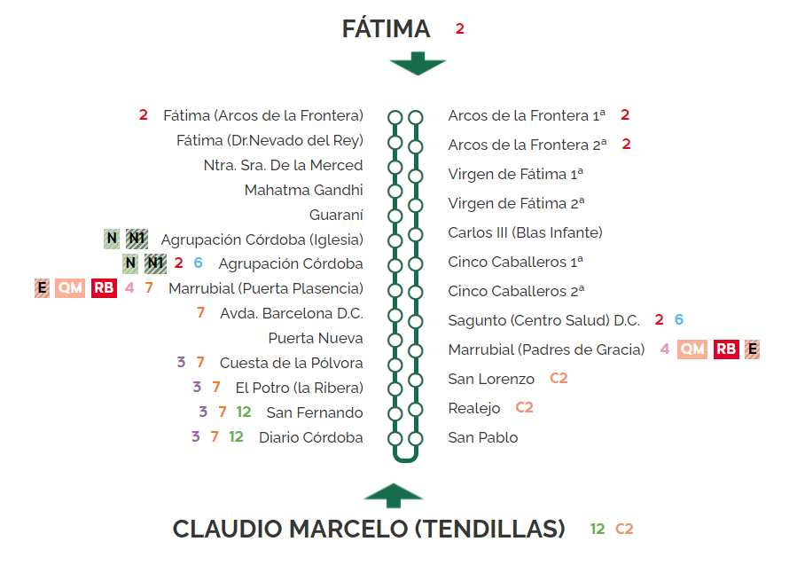

Horario de servicio: Lunes a Domingo
| Parada | Lunes - Viernes | Sábado | Domingo y Festivos |
|---|---|---|---|
| Ciudad Jardín | 06:00, 06:30, 07:00, 07:30, 08:00... | 07:00, 08:00, 09:00... | 08:00, 09:30, 11:00... |
| Centro | 06:15, 06:45, 07:15, 07:45, 08:15... | 07:15, 08:15, 09:15... | 08:15, 09:45, 11:15... |
